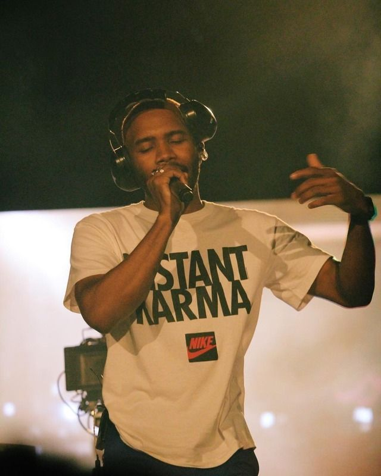

Teorias y Boys Don't Cry
La profunda historia detras de Nights
Nights es un sencillo que aparece en el disco Blonde, de Frank Ocean. Dura unos largos cinco minutos, tiempo que hoy en día parece casi eterno. Ocean es considerado uno de los artistas más silenciosos y, paradójicamente, también uno de los más virtuosos. Para Billboard, Blonde es el segundo mejor álbum de la década, apenas detrás de My Beautiful Dark Twisted Fantasy, de Kanye West; Pitchfork, por su parte, lo considera el mejor, intercambiado lugares con West. Para dimensionar esta obra maestra se tiene que entender el concepto de rapsodia, que consiste en una pieza musical hecha a partir de diversas piezas sin relación entre sí, con una parte dramática y usualmente lenta. Esta lentitud monótona suele ser interrumpida, a su vez, por una fractura melódica, para dar paso a la siguiente fase de la canción.
Ocean, al igual que la mayoría de los artistas que han ejecutado rapsodias, cuenta una historia a través de la canción, único hilo conductor a través de una melodía carente de sentido. El autor inicia hablando sobre la frustración en un mundo moderno, donde existen personas superiores a las demás. Los ritmos ligeros al inicio dan una sensación de borrachera, de estar atontado y sufrir las secuelas de una noche, como el nombre de la canción indica. La letra habla sobre una persona realizada, dentro de lo que el mundo considera “éxito”, a través del dinero. A su vez, habla sobre la soledad y el desencanto que generan las personas (00:31): I don’t trust them anyway, You can’t break the law with them.
Inmediatamente después el artista procede a cometer un crimen. La narrativa completa versa sobre una persona que lleva una vida disoluta, que vive en las noches en lugar de en los días. Que roba, mata y tiene dinero, pero que, a pesar de esto, se siente profundamente solo. En un punto (02:34), Ocean deshace una canción de trap-rap para convertirla en una rapsodia neo-soul. Quiebra la monotonía rítmica después de altibajos tonales de voz asemejados al soul y casi femeninos, con sintetizadores semidesentonados, sobrepuestos con voces agudas, y un piano que va in crescendo totalmente desafinado, junto con los sintetizadores (02:28). Luego el piano va dejando ritmos cacofónicos durante 30 segundos, hasta que colapsa (03:28). Ahí, da paso a una nueva monotonía, lenta, después del colapso total, que uno podría interpretar como el fin de una composición para dar lugar a otra. La canción cierra magistralmente con una repetición de frases, que se pierde lentamente en una monotonía lírica y melódica, dando descanso después del clímax rapsódico.
Nights, de Ocean, es quizás una de las mejores canciones del siglo XXI, no sólo porque reintroduce una forma de hacer música que no había sido ejecutada con tanta perfección desde Bohemian Rhapsody, de Queen, o desde Free Bird, de Lynyrd Skynyrd, sino por la forma en que aborda una de las realidades más duras: la soledad en medio de la riqueza. Como lo describe el mismo Ocean: All the reverends preachin’ self-made millionaire status, when we can eat at Shoney’s on occasion. Vivimos en una sociedad en donde los pastores alaban a los millonarios, cuando podríamos comer en un restaurante familiar, como Shoney’s. Dejaron de ser importantes para nosotros esos momentos, de paz y sosiego, cuando todavía podíamos sentarnos a comer y nada más.
Historia detras de Boys Don't Cry
Despues del estreno de channel ORANGE la vida de Frank se ve llena de sorpresas, tales como la llegada de sus primeros dos grammys en la misma noche, uno como Mejor Disco Urbano y el otro por su colaboracion con Jay-Z y Kanye West en Not Church in the Wild. Su actuacion en los Grammys que mas tarde califico como frustrante, su gira por Canada y Europa donde se lastima las cuerdas vocales y se ve obligado a cancelar OVO Fest de Drake, lo llevan a anunciar un posible retiro y poco a poco ir dando menos entrevistas. Muchas veces comento que estaba cansado de Los Angeles y le costaba encontrar inspiracion en ese lugar, asi que sin inspiracion y con la presion de su disquera para sacar su nuevo disco, Frank toma su maleta, la llena de sus sueños y muchas tarjetas de memoria y se va a Londres. Renta el mitico estudio de Abbey Road, reemplaza a todo su equipo de negocios y asi es como inicia el camino de Frank en la busqueda de su libertad.
La busqueda de la libertad de Frank Ocean fue una travesia que duro 7 años, 7 años de los cuales sabemos muy poco. Frank empieza a vivir una vida bajo perfil en el cual solo nos enteramos que esta pasando con él por medio de las colaboraciones que tiene con otros artistas. Al mismo tiempo, Frank se dedica a vivir su vida y a generar mas experiencias, por lo cual empieza a organizar fiestas a lo largo de Londres y Tokio, dichas fiestas enfurecen a la gente de su disquera ya que esperaban el disco. Presionado, en el 2015 anuncia que en julio de ese año va a estrenar un disco y una revista que se iba a llamar Boys Don't cry, llega esa fecha y no pasa nada. El 1 de agosto del 2016, Frank sube a su sitio un livestream de él construyendo una escalera, escalera que según Tom Sachs un colaborador del procesando, respresenta todo el proceso que tiene que hacer Frank para construir un nuevo disco, fue un livestream de 140 horas que al final nos regaló Endless. Endless es un album que muy poca gente ha escuchado por el hecho de que se ve más como un sketchbook, cuando otros discos de Frank se ven como un libro. También se rumoreaba de que habia una segunda version del disco. Un dia despues, en la media noche del 20 de agosto, Frank revela Blond. Al estar leyendo los titulos, la gente se da cuenta que no están con Def Jam (compañia discografica) sino con Boys Don't Cry, que es la disquera de Frank Ocean. Con ella, Frank se vuelve dueño de todas sus canciones, de todas las ganancias y más importantes, se vuelve dueño de su libertad creativa. Fuentes: Diana Rojas